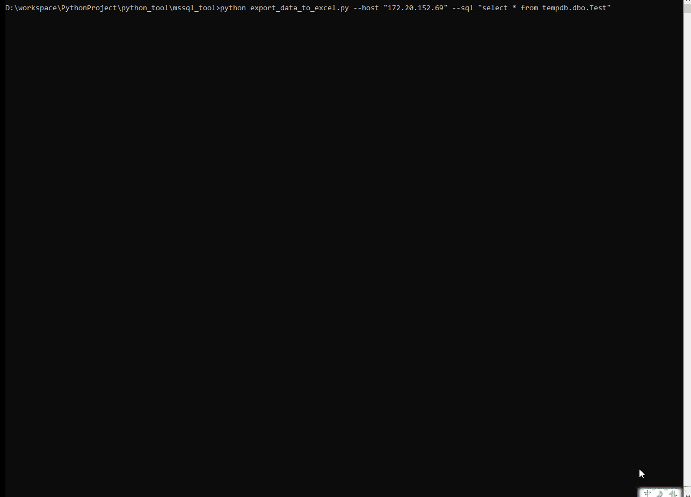

遇到一个尴尬的问题，SSMS的GridView对于大字段的（varchar(max)，text之类的），支持不太友好的，
超过8000个长度之外的字符，SSMS的表格是显示不出来的（当然也就看不到了），也是无法直接导出来的（超过8000个之外的字符的）
这种问题在别人遇到来求助的时候，是不可忍受的，于是快速用Python写了一个导出数据到Excel的功能，
最主要的是可以导出大字段的内容，且方便简洁，人畜无害，绿色环保，不太喜欢SSMS那种下一步下一步……的操作。那些在SSMS中无法显示出来的字段，这下可以显出原形了。
1，必选参数是服务器地址和sql语句，如果sql语句没有带库名的话，那么必须传入数据库的名字，否则默认是master库，因此sql尽量带库名吧
2，导出路径是C:\Windows\Temp\，导出完成后自动打开，方便查看，另存
3，根据sql语句，导出完成的查询结果，第一行是字段名，其余是查询结果
4，依赖于xlsxwriter这个包
5，没有太严格的参数校验以及数据库账号密码支持，有需要的自己改造
import os
import re
import time
import pymssql
import xlsxwriter
import argparse
def get_data_from_db(host='127.0.0.1',server='mssql',port=1433,database='master',sql_stament=''):
conn = pymssql.connect(host=host, server=server,port=port, database=database,as_dict=True, autocommit=True)
cursor = conn.cursor()
# 简单的判断，别尼玛执行了truncate啥的
if len(sql_statment)<6 or not (re.match(r'^select',sql_statment.lstrip())):
print('sql statment is error,exit……')
exit(1)
try:
cursor.execute(sql_stament)
result = cursor.fetchall()
except:
raise
finally:
cursor.close()
conn.close()
return result
def export_to_excel(result):
current_time = time.strftime("%Y%m%d%H%M%S", time.localtime())
workbook = xlsxwriter.Workbook('C:\\Windows\\Temp\\'+current_time+'_temp.xlsx')
worksheet = workbook.add_worksheet("sheet1")
# head row
col = 0
for key in result[0].keys():
worksheet.write(0, col, key)
col = col+1
# data row
row = 1
col = 0
for dict in result:
for key in dict:
worksheet.write(row, col, str(dict[key]))
col = col + 1
col = 0
row += 1
workbook.close()
os.startfile('C:\\Windows\\Temp\\'+current_time+'_temp.xlsx')
if __name__ == "__main__":
parser = argparse.ArgumentParser()
parser.add_argument("--host",required=True, type=str,help="host name or ip")
parser.add_argument("--db",required=False, type=str,help="database name")
parser.add_argument("--sql", required=True, type=str, help="sql statment")
args = parser.parse_args()
host = args.host
database = args.db
if not database:
database='master'
sql_statment = args.sql
print('executing sql……')
result = get_data_from_db(host = host,database = database,sql_stament =sql_statment)
print('exporting data……')
export_to_excel(result)
# example
# python export_data_to_excel.py --host "127.0.0.1" --sql "select * from tempdb.dbo.Test"
在10W级别以下，速度还是可以的，这是个demo
